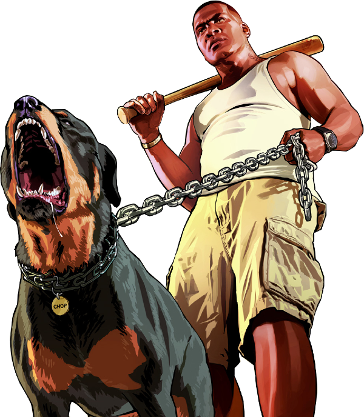
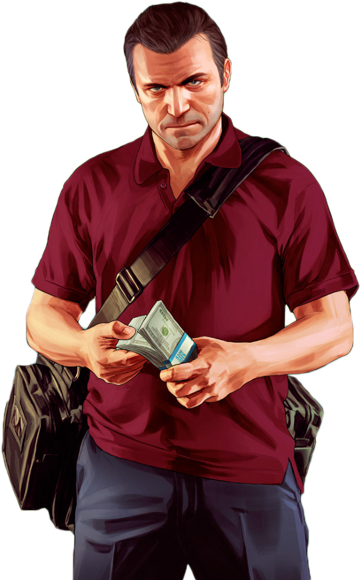
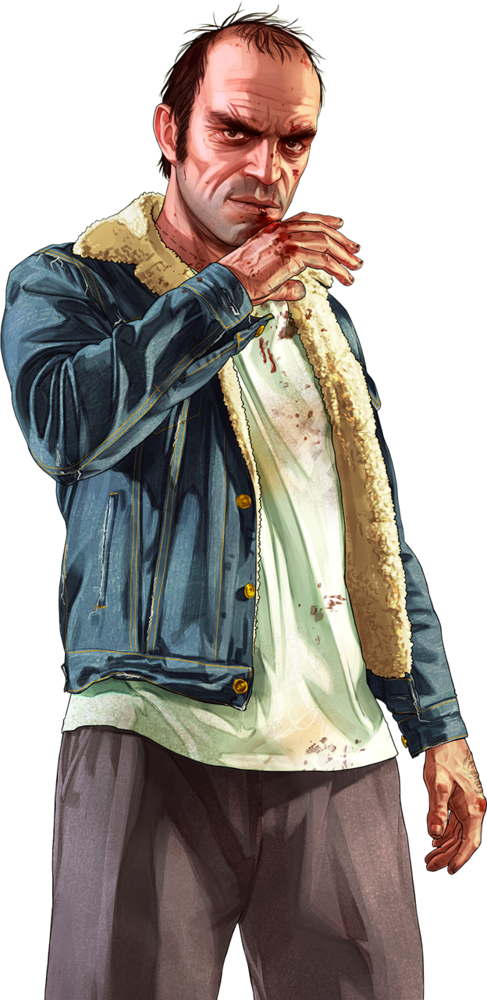
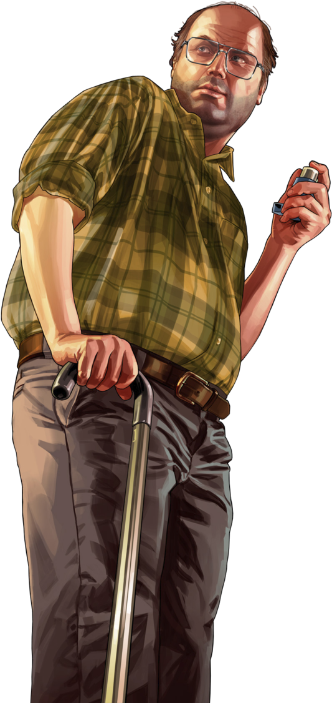

EL MEJOR JUEGO
La inmensidad y la atención al detalle del mundo abierto de GTA 5 son impresionantes. Los desarrolladores de Rockstar Games
han creado un vasto y vibrante mundo virtual lleno de vida, con una variedad asombrosa de paisajes, ciudades, suburbios, montañas, mares y desiertos.
Cada rincón del mapa está cuidadosamente diseñado y lleno de actividades, misiones secundarias, secretos y personajes
interesantes. Los jugadores pueden perderse durante horas explorando este mundo digital sin agotar todas sus posibilidades.

Franklin Clinton:
Franklin es un joven afroamericano que trabaja como recaudador de deudas para un concesionario de
automóviles usados.
Sueña con escapar de su vida de crimen en Los Santos y hacer algo más significativo.

Michael De Santa
Michael es un ex ladrón de bancos y estafador que vive bajo el programa de protección de testigos en Los Santos.
Está casado y tiene dos hijos.
Michael es un personaje complejo con problemas de ira y control.
Personajes secundarios

Trevor Philips

Lester Crest
"Trevor Philips es un ex piloto de la Fuerza Aérea Canadiense convertido en delincuente y traficante de drogas. Vive en el desierto de Blaine County y es conocido por su comportamiento impredecible y violento.
Por otro lado, Lester Crest es un genio en informática y un maestro en la planificación de atracos. A pesar de su apariencia humilde, es esencial en la ejecución de diversos golpes en el juego."
GTA Y SU SAGA
Estos son los GTA Mas importantes y ordenados en orden cronologico desde su lanzamiento antiguo hasta el actual

GTA San Andreas
"Grand Theft Auto: San Andreas" es un videojuego de acción y aventura ambientado en el ficticio estado de San Andreas en la década de 1990.
Los jugadores asumen el papel de Carl "CJ" Johnson, un ex p****** que regresa a su hogar en Los Santos.
CJ se ve envuelto en una trama de corrupción y rivalidades
entre p****** mientras intenta reconstruir su vida.

GTA 4
El juego está ambientado en la ficticia Liberty City, basada en la ciudad de Nueva York. Los jugadores asumen el papel de Niko Bellic,
un inmigrante de Europa del Este que llega a Liberty City en busca del "sueño americano".
Niko se ve envuelto en el oscuro mundo del crim*n organizado mientras busca venganza y oportunidades en la ciudad.

GTA V
El juego está ambientado en el ficticio estado de San Andreas y la ciudad de Los Santos, que está basada en Los Ángeles y sus alrededores. Los jugadores asumen el papel de tres personajes principales: Michael De Santa,
un ex ladrón de bancos que vive bajo el programa de protección de testigos; Franklin Clinton,
un joven que trabaja como recaudador de deudas; y Trevor Philips, un ex piloto de la Fuerza Aérea Canadiense.